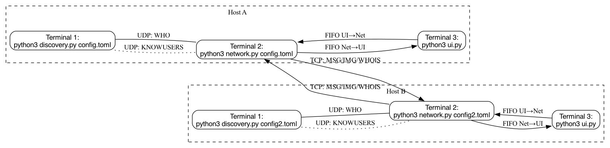

Loading...
Searching...
No Matches
SLCP-Chat Programm – Detaillierte Dokumentation
Einführung
Dieses Projekt implementiert einen dezentralen Chat-Client basierend auf dem Simple Local Chat Protocol (SLCP). Ziel ist eine Peer-to-Peer-Kommunikation ohne zentralen Server, die Text- und Bildnachrichten im lokalen Netzwerk ermöglicht.
Projektziele
- Vollständige Umsetzung des SLCP-Protokolls: JOIN, LEAVE, WHO, KNOWUSERS, MSG, IMG, WHOIS
- Dezentrale Discovery mittels Broadcast und lokaler Discovery-Dienste
- Klare Trennung der Funktionalität in drei Prozesse:
- Benutzeroberfläche (ui.py)
- Netzwerk-Modul (network.py, peer.py)
- Discovery-Dienst (discovery.py)
- Konfiguration per TOML-Datei, editierbar über CLI
- Robustheit: Wiederverwendbarer Port-Finder, Named Pipes (FIFO), Signal-Handling
Architektur
Die Software-Architektur besteht aus drei Hauptkomponenten:
- Discovery-Dienst: Beantwortet WHO-Anfragen, verwaltet aktive Peers, kommuniziert über UDP
- Netzwerk-Modul: Sendet/empfängt SLCP-Nachrichten per UDP/TCP, verarbeitet JOIN/LEAVE/MSG/IMG/WHOIS
- Benutzeroberfläche: CLI-Interface, leitet Befehle an Netzwerk-Modul weiter und zeigt Nachrichten
Kommunikation erfolgt über:
- UDP-Broadcast (entweder 255.255.255.255 oder lokale Broadcast-Adresse, z.B. 192.168.178.255:whoisport) für Discovery
- TCP-Unicast für Direktnachrichten (MSG, IMG) und WHOIS
- Named Pipes (FIFO) für IPC zwischen UI und Netzwerkmodul
Konfiguration
Die zentrale Konfigurationsdatei config.toml enthält folgende Parameter:
- handle Benutzername des Clients
- port Start-Port für lokale UDP-/TCP-Sockets
- whoisport UDP-Port für Discovery-Broadcasts
- autoreply Automatische Abwesenheits-Antwort (leer = deaktiviert)
- imagepath Verzeichnis zum Speichern empfangener Bilder
Optional: zweite Konfiguration (config2.toml) zum schnellen Wechsel des Handles und Ports (Ordner: User2).
Modulübersicht
- common.py: Helferfunktionen, FIFO-Verwaltung, Logging, PID-Management
- peer.py: Modelliert Peers mit Handle, IP und Port, unterstützt Vergleich/Hash
- discovery.py: Discovery-Dienst (WHO, JOIN, LEAVE, KNOWUSERS)
- network.py: Netzwerkmodul (MSG, IMG, WHOIS, TCP/UDP-Sockets)
- ui.py: Kommandozeilen-UI, zeigt Nachrichten und empfängt Befehle
SLCP-Protokoll
SLCP-Befehle (textbasiert, UTF-8,
-terminiert):
- JOIN <Handle> <Port>
- LEAVE <Handle>
- WHO
- KNOWUSERS <Handle1> <IP1> <Port1>,...
- MSG <Handle> <Text>
- IMG <Handle> <Size> (gefolgt von Binärdaten)
- WHOIS <Handle> (Antwort: IAM <Handle> <IP> <Port>)
Schneller Start mit Skript
#!/bin/bash
gnome-terminal -- bash -c "python3 discovery.py config.toml; exec bash"
gnome-terminal -- bash -c "python3 network.py config.toml; exec bash"
gnome-terminal -- bash -c "python3 ui.py; exec bash"
Ausführbar: chmod +x start_chat.sh
Abhängigkeiten & Dokumentation
- pip install toml
- Dokumentation generieren: doxygen Doxyfile (HTML in html/)
Fehler
- ConfigNotFound: Konfigurationsdatei nicht gefunden – Lösung: Pfad prüfen oder --config-Parameter setzen.
- FIFOPermission: Keine Berechtigung für FIFO-Erstellung oder -Zugriff – Lösung: Schreibrechte auf PIPE_DIR sicherstellen.
- BrokenPipe: BrokenPipe-Fehler beim Schreiben in FIFO – Lösung: Retry/Timeout implementieren.
- UDPBlocked: UDP-Broadcast blockiert (z.B. macOS Restriktionen) – Lösung: lokale Broadcast-Adresse (z.B. 192.168.178.255) verwenden.
- PortInUse: Socket-Bind-Fehler (Port belegt) – Lösung: anderen Start-Port konfigurieren.
- TCPTimeout: Timeout beim TCP-Verbindungsaufbau oder -Akzeptieren – Lösung: Socket-Timeouts setzen und socket.timeout abfangen.
- InvalidCommand: Unbekannter SLCP-Befehl – Lösung: Syntax validieren und Warnungen loggen.
- PartialImage: Teilweiser Bildempfang – Lösung: empfangene Bytes mit Size abgleichen.
- SignalHandlerFail: Signalhandler nicht registriert – Lösung: signal.signal() vor start() aufrufen.
- IPCError: Fehler bei IPC via FIFO – Lösung: Ausnahmen abfangen und fehlende Pipes automatisch anlegen.
- WinError 10488: Socketadresse bereits genutzt – Lösung: Terminal neu starten.
- Your branch is behind: Branch veraltet – Lösung: git pull ausführen.
- TypeError: 'DiscoveryService' is not subscriptable – Lösung: Objekte als Liste übergeben.
Screenshots einbinden (in docs/Bilder):

Zwei Discovery-Instanzen

Nicht gepullt vor Commit

Falsche Listenübergabe

Library fehlte
Flussdiagramm der Hosts
Ablauf auf zwei Hosts im selben WLAN:
- Host A: startet discovery.py, network.py, ui.py
- Host B: ebenso, mit eigener config
Kommunikation:
- UDP-Broadcast WHO → Discovery
- UDP-Reply KNOWUSERS
- TCP-Unicast für MSG/IMG/WHOIS
- FIFO für UI-Netzwerkkommunikation
Flussdiagramm der Hosts

Autoren
- Rajan Kakkar (1538362)
- Zufar Reyal (1417498)
- Soufian Kenbouche (1574324)
- Bileya Karimou (1570665)
- Yasmin Hammouni (1514652)